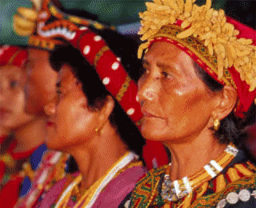
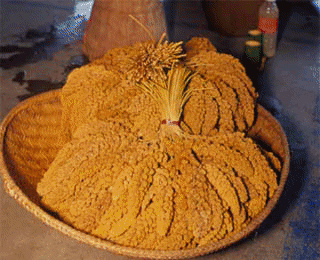
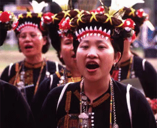
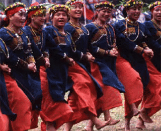

排灣族在臺灣原住民族中，以藝術成就著稱，無論雕刻、製陶、服飾等，都非常出色，這些藝術成就與他們的信仰、傳說、神話息息相關。

排灣族傳統生活領域範圍包括南部知本主山以南的中央山脈兩側山麓及海岸地區，人口數佔臺灣原住民族中的第三位。根據個別語言差異又可分為以下的亞群：包含拉瓦爾（Raval）系統，以及北部排灣的布曹爾（Butsul）、中部排灣的巴武馬（Paumaumaq）、南部排灣的喬保爾（Chaobolbol）、沙步得（Sabdek）、與拍力澳（Parilallao），以及分佈在中央山脈東側之巴卡羅卡羅（Pakarokaro，屬東部排灣群）等；行政區域上包括屏東縣的三地、瑪家、泰武、來義、春日、牡丹、獅子、滿洲八鄉；以及臺東的太麻里、金峰、大武以及達仁鄉。
在臺灣所有南島語族中，排灣族最著名的便是他們的藝術成就。不論是雕刻、製陶、家屋裝飾、服飾等都非常出色。這些藝術成就與他們的信仰、傳說、神話息息相關，使排灣族文化在臺灣南島語族中獨具強烈的色彩與藝術特質。
排灣族擁有獨特的階級制度，各階層通婚與社會流動不易，頭目家族的聯姻婚禮是部落中最重要的社會慶典，五年祭則是最具代表的祭儀。

要了解排灣族的樂舞，同樣地不能不先了解排灣族的社會組織特色與祭儀文化。排灣族和鄰近的魯凱族擁有獨特的貴族制度，其原則類似漢人古時的宗法制度，長嗣繼承貴族階級，餘則分出。各部落分為貴族、士族與平民等階級，形成一嚴密的階層化社會，不同階層中的通婚與社會流動不易。而頭目與頭目家族的聯姻婚禮，往往成為部落中最重要的社會慶典。
1. 婚禮
排灣族人的婚禮和傳統漢人的習俗類似，成婚前包含了幾個過程，如問婚（ki vadaq）、約聘（seman suju 或 seman
sipamau）、迎娶前夕的單身之夜（papu si
qauqaung）。待互許終身的男女與雙方家庭就婚期與聘物內容協議好之後，婚禮前夕，新娘與新郎的異姓朋友和親人聚集在女方家前，老人們在一旁吟唱情歌，其異性朋友們則輪番插入新娘新郎或男女儐相之間一起跳舞，直到半夜，最後才由長者們撮合新娘與新郎一起跳舞。到了凌晨，在長老與眾親友的見證下男女雙方才能互相擁抱並行接吻禮（pasa
sangutj）。
婚禮（pa
puvalan）當天早晨，男方到女方家中迎娶。傳統排灣族人的迎娶過程，是一種類似模仿搶婚的過程。特別當頭目女兒被公認為是冰清玉潔的，男方代表必須將新娘揹出家中，女方親戚一方面不捨地哭吟著、一方面作勢阻擋揹新娘者離去。而後，必須由相關家系的女巫為其驅邪並祝福。婚禮結束後，在眾人的期待下，新娘由新郎和女儐相陪伴一起步出屋外，加入眾人的舞蹈行列。
2. 五年祭
根據古樓的神話，男性祖先與女神結為夫妻並生下子女，這些後代成為人世間男女巫師的鼻祖，到各部落教導巫術與祭儀的知識，包括「五年祭」。除了拉瓦爾雅群之外，排灣族的祭儀中最具代表性的是「五年祭」（maleveq）。所謂的「五年祭」原意為「人神盟約之祭」，為的是紀念祖靈從聖山大武山下來到人間與人相會，之所以稱五年，根據日籍學者宮本延人等的說法乃因族人相信祖靈下山尋訪各部落再回到大武山所花費的時間；而不同部落，如古樓（Kulalao）則有不同的說法。然而不論如何，maleveq
以祭拜祖靈為中心，並要朝著頭目祖先的發源部落祭拜的重點是共通的。
過去，不同部落輪流舉行五年祭，現在只剩下臺東達仁鄉土?村（最近舉行時間為 2003 年）和屏東來義鄉古樓村（最近舉行時間為 2004
年）可見。「五年祭」的準備過程歷時數月，由女巫師問神選定祭儀日期，儀式進行一方面有一迎祖靈→祭祖靈→送祖靈之結構；另一方面則以刺祭球為儀式的核心。刺球者多為由女巫師選定的男巫師，刺球者在儀式期間必須練習，雖然儀式間有不同的刺球過程，刺球目的主要仍在祈求好運與平安。歌舞也是「五年祭」中引人注目的場面。排灣族人的祭儀歌樂中如此唱著：
「祖先們！你們在這裡我們正祈求著歌舞歡呼吧！我們正遇見了，使我們都互相認識，歌舞歡呼吧！第五年時，我們再相見，歌舞歡呼吧！」或是「我們的祖先歡舞吧！我們會見了。你們青少年的，今天在郊外作架，歌舞歡呼吧！iagu
la iagu。第五年時我們再會吧！歌舞歡呼吧！」
排灣族人擅長以歌樂抒情，歌樂的歌詞大部分是即興的，Laisu 是最膾炙人口的情歌，傳統排灣族音樂反映了族人的生命禮俗、祭典儀式和社會生活各方面的經驗。

排灣族的音樂
排灣族人擅長以歌樂抒情，舉凡男女訴情、離別、緬懷故人等等情感，都透過排灣族人幽遠的歌聲與委婉的比喻表露無遺，膾炙人口的情歌 Laisu
即為一例。其中，婚禮歌樂佔了傳統歌樂的一大部分，特別當即將出嫁的新娘，感念與父母離別之情，而以哭泣的音調吟唱出心中的不捨，聽者無不動容。
傳統排灣族音樂反映了族人生命禮俗、祭典儀式及社會生活各方面的經驗。排灣族歌樂的歌詞大部分是即興的，但旋律有一定的形式，將歌詞套上原有旋律，唱時可依個人能力加上裝飾音。吟唱時，歌詞要典雅，語氣要謙卑，感情要不虛偽，並常以自然界的事物來比擬人的感情。團體歌唱時，仍以領唱與和腔的唱法最為普遍。一般有單音唱法，但「五年祭」的團體歌唱時會有頑固低音的複音唱法出現。結婚儀式中也有異音唱法的情形。排灣族昔組織有兩種：未達八度的七音音階、與近似琉球音階（do、mi、fa、sol、la）。光復前排灣族的單管及雙管口笛、弓琴、口簧琴及單管及雙管鼻笛等樂器都非常豐富，目前仍有少數老人會吹奏。由於年青人對身文化的自覺，也越來越多人開始學習此樂器。排灣族的歌樂主要的特色是，唱者的節拍不太清晰固定。這與其語言有直接的關係。如果不懂其語言，光從音樂分析，是很難瞭解歌樂的內涵。
排灣族之歌樂可分為「勞動歌」、「生活歌」及「祭典歌「勞動歌」較常見於山上工作間之休息時間及居家從事編織工作時，伴隨身體律動之歌樂。「生活歌」較廣泛且豐富，吟唱方式不受大小場合之限制，尤其在男女戀愛之間，以及各慶典應酬酒宴上或喪禮上都可以被吟唱。「祭典歌」過去是族人在耕種、出征前後於施法所唸唱的祭儀性歌曲。例如「五年祭」、「舞士舞之歌」等歌樂。「傳說歌」是族人閒暇聊天所唱之敘述歌，以即興式敘述自己所經歷的事件，或抒發情緒之歌曲。
排灣族歌唱形式大致有三種：一是兩部不和協之異音唱法。二是具有持續低音之唱法。三是以一個主題作多種變化的變奏唱法。例如著名的「lumi
之歌」。其中特色在於歌曲「滑音」之表現，此「滑音」所形成的裝飾效果，是強化感情表達之重要關鍵，換言之，越有豐富的感情，越能藉完美的滑音呈現內心的真實情緒。
排灣族的傳統樂器
口簧琴
在臺灣各原住民族中，除了達悟族以外，口簧琴可說是最為普遍的一件樂器，過去平埔族亦經常使用口簧琴（呂炳川：1982，P. 15）。
口簧琴的琴臺長約三寸，寬約三、四公分，將竹片削薄，中央鑽細長的孔，孔的右端固定黃銅薄片，並於竹片的左右兩端皆綁著繩子。用左手將琴臺的凸面往嘴邊靠攏，再以右手拉動繩子，使簧片的振動經由口腔的共鳴而發出聲音。口簧琴的用途非常廣，可藉此一樂器發聲替代語言進行交談，尤其於年輕男女追求異性時，常以口簧琴傳達心意。
弓琴
弓琴主要是臺灣南部的布農族及排灣族人所使用的樂器。弓琴的把長約二尺，以寬約二、三分的竹子削成弓，再繫上琴絃於竹弓之兩端。演奏時上端在嘴上並用雙唇輕輕含住竹弓，以口腔作為共鳴箱，左手則握住下端以支撐弓琴，用拇指及食指按絃以調整音調，再以右手的拇指和食指在絃的中央彈奏。
鼻笛
鼻笛主要是南部的各族所使用，尤其以排灣族和布農族人最常吹奏（鈴木質：1991，P.
153~154）。鼻笛有單管及雙管兩種形式，其中雙管型式的基本上尚可分為兩種，一種為一管有指孔，用以吹旋律，另一管則無指孔，用以吹固定低音，兩管同時而分別吹奏出旋律與固定低音。第二種為兩管都有指孔，都可吹奏旋律，吹奏時可以兩管齊奏，但也可能吹奏兩個不同旋律，呈複音現象。
縱笛
縱笛一般以五孔最多，但從兩孔到八孔的也有。縱笛也可分為單管及雙管兩種形式。縱笛過去在臺灣的原住民族中普遍被使用，用來祭敵人的人頭，或在打獵時引誘獵物，現在則用在聚會等娛樂中。目前臺灣原住民族中以排灣族使用最多（許常惠：1994，P.
17）。
來甦之歌 (Laisu)
來甦是排灣族最膾炙人口的情歌。排灣族人擅長以歌樂抒情，透過幽遠的歌聲與委婉的比喻來表達心情。
魯密之歌 (Lumi)
魯密之歌是以一個主題作多種變化的變奏唱法，其最大特色在於歌曲「滑音」的表現，「滑音」所形成的裝飾效果，是強化感情表達的重要關鍵。
排灣族舞蹈的隊形，以牽手圍成圓圈起舞最常見，男女區分是常態，動作仍以腿部的動作為主，雙手交叉外牽的四步舞是最基本與常見的動作型態。

排灣族人稱舞蹈為
zemiyan，依照過去學者的紀錄，舉凡儀式、講古、飲酒歡宴、歡迎等場合都可看見排灣族人的舞蹈，然而舞蹈情境不同並不決定動作差異。此外，根據日人的紀錄與耆老的口述，過去排灣族人除了在婚禮與五年祭之外，部分部落尚有舉行獵首祭並於其中跳舞的習俗，但後者已隨著獵首風俗消失而不復見，除了對形與行進方向，從日人的有限的文字紀錄中也無法得知其動作。整理日據時期與中、外動作分析者的紀錄，排灣族人的舞蹈動作不若阿美族繁複，而有以下特色：
隊形：
直線或圓圈。牽手圍成圓圈起舞的隊形最為常見。男女區分是常態，女性或接於男性之後、或另立一圈於男性之內。
動作：
仍以腿部的動作為主。雙手交叉外牽的四步舞是最基本與常見的動作型態；尚有曲膝左右或前後跳躍和單腳跳的動作。一般而言，祭儀中女性的動作保守含蓄，男性才有較大幅度的跳躍或交互蹲跳動作。
五年祭儀式樂舞 (屏東古樓部落)
排灣族的五年祭樂舞，隊形為直線或圓圈，動作以腿部的動作為主。祭儀中女性的動作保守含蓄，男性才有較大幅度的跳躍或交互蹲跳動作。